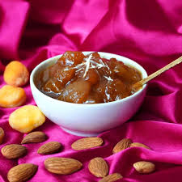

Qubani Ka Meetha
Ingredients:
- Dried apricots (qubani) - 250 grams
- Sugar - 1 cup
- Water - 2 cups
- Cardamom pods - 4 to 5
- Almonds - 1/4 cup (sliced)
- Pistachios - 1/4 cup (sliced)
- Whipped cream or vanilla ice cream - for serving (optional)
 Recipe:
- Wash the dried apricots (qubani) thoroughly and soak them in water overnight or for at least 6 hours.
- In a saucepan, combine the soaked apricots (along with the water), sugar, and cardamom pods.
- Cook the mixture on low heat until the apricots are soft and the sugar has dissolved, stirring occasionally.
- Remove the cardamom pods and blend the mixture into a smooth paste using a blender or immersion blender.
- Transfer the blended mixture back to the saucepan and cook on low heat for another 10-15 minutes to thicken the consistency.
- Remove from heat and let the Qubani ka Meetha cool to room temperature.
- Once cooled, refrigerate the dessert for a few hours or until chilled.
- Serve Qubani ka Meetha chilled, garnished with sliced almonds and pistachios.
- Optionally, serve with a dollop of whipped cream or a scoop of vanilla ice cream for added indulgence.
- Enjoy the rich and flavorful Qubani ka Meetha as a delightful dessert!